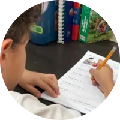

“Como mamá, elegir la escuela para mis hijas ha sido una de las decisiones más importantes. Hoy puedo decir con gratitud que verlas crecer en esta escuela ha sido una verdadera bendición”.
texto3
Lo mejor que nos pudo haber pasado fue encontrar esta escuela, ha sido de gran bendicíon para mi hija!!!! Excelente nivel académico.
Cuando entre a la escuela pense que era como cualquier otra escuela, pero con La Roca es diferente, los maestros se preocupan genuinamente por los niños; es como una familia en la que no hay divisiones, en la que todo esta basada en Dios y nosotros como escuela tratamos de parecernos cada día mas a Él.
texto

Al iniciar tanto en esta escuela como en el sistema yo no me esperaba lo importante que iba a ser para mi vida, me enseño mucho, a ser más organizado y establecerme metas a mi vida diaria y lo más importante es que aprendo de Dios todos los días y los maestros me instruyen a crecer en su Palabra.
Cuando entré a trabajar a La Roca Learning Center tenía muchos nervios después de más de cinco años de Homeschooling. Sin embargo, la experiencia me ha sorprendido, ya que más que una escuela, he encontrado un ministerio donde enseñar y ministrar a los alumnos con la Palabra de Dios es un gran privilegio y un gran reto. Oro para que Dios me permita seguir sirviendo con dedicación y reflejar el carácter de Cristo en cada alumno a través de mi vida y trabajo.
Trabajar en La Roca Learning Center ha sido una gran bendición para mi y le doy muchas gracias a Dios por el privilegio de poderle servir en este hermoso ministerio ya que no sólo transmitimos conocimiento a las siguientes generaciones, sino que también podemos sembrar en ellos principios y valores que transforman sus vidas.
texto